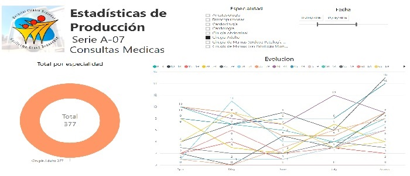
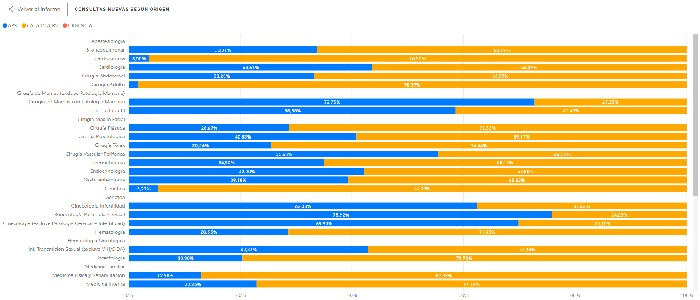
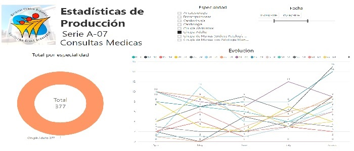
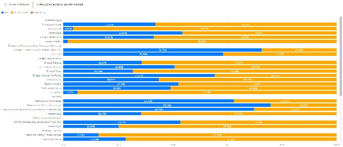

Sebastian Garcés Muñoz
Ingeniero Civil Informático
Universidad de Concepción
Concepción, Chile
19/12/1992
18.414.115-9
sebagarces92@gmail.com
+56 9 5879 7267
Educación
Colegio Concepción Pedro de Valdivia - 1998 a 2010
Universidad de Concepión - 2011 a 2017
Experiencia
Proyecto Brecha Digital - Hospital Guillermo Grant Benavente
Practica profesional - Arauco S.A
Idiomas
Español - Nativo
Ingles - Intermedio
Otros
Memoria de titulo ganadora de "Apoyo a la realizacion de Tesis, Corfo, Incuba Udec"